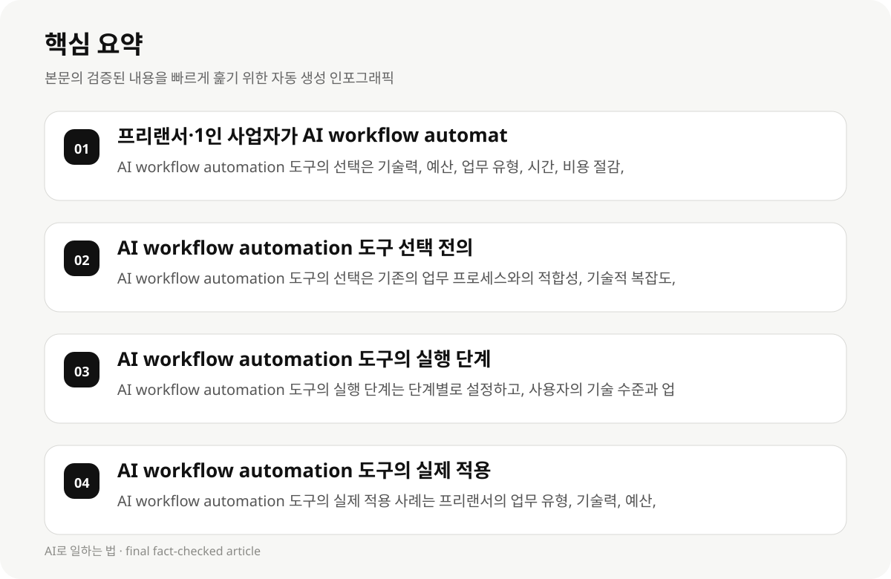

프리랜서·1인 사업자가 AI workflow automation 도구를 선택할 때 고려해야 할 요소 #
프리랜서 및 1인 사업자가 AI workflow automation 도구를 선택할 때는 기술력, 예산, 업무 유형, 시간, 비용 절감, 실제 적용 사례 등을 고려해야 합니다. AI workflow automation 도구는 사용자의 기술 수준과 업무 유형에 따라 달라질 수 있으며, 초기에는 시간과 비용이 많이 들 수 있지만, 장기적으로는 시간과 비용 절감 효과가 나타날 수 있습니다.
- AI workflow automation 도구의 선택은 기술력, 예산, 업무 유형, 시간, 비용 절감, 실제 적용 사례를 고려해야 합니다.
- AI workflow automation 도구의 선택은 기술력, 예산, 업무 유형, 시간, 비용 절감, 실제 적용 사례를 고려해야 합니다.
AI workflow automation 도구 선택 전의 준비 단계 #
AI workflow automation 도구를 선택하기 전에는 기존의 업무 프로세스를 분석하고, 사용자의 기술 수준, 예산, 그리고 업무 유형을 고려해야 합니다. 예를 들어, 프리랜서가 데이터 분석을 하는 경우, AI 도구를 사용해 시간과 비용을 절감할 수 있지만, 단순한 업무 처리를 하는 경우는 기존의 업무 프로세스를 유지하는 것이 유리할 수 있습니다.
- AI workflow automation 도구의 선택은 기존의 업무 프로세스와의 적합성, 기술적 복잡도, 예산, 그리고 사용자의 기술 수준을 고려해야 합니다.
- AI workflow automation 도구의 선택은 사용자의 기술 수준과 업무 유형, 예산, 그리고 기존의 업무 프로세스를 고려해야 합니다.
AI workflow automation 도구의 실행 단계 #
AI workflow automation 도구를 실행하기 위해서는 단계별로 설정하고, 사용자의 기술 수준과 업무 유형을 고려해야 합니다. 예를 들어, 프리랜서가 데이터 분석을 하는 경우, AI 도구를 사용해 시간과 비용을 절감할 수 있지만, 단순한 업무 처리를 하는 경우는 기존의 업무 프로세스를 유지하는 것이 유리할 수 있습니다.
AI workflow automation 도구의 실행 단계는 단계별로 설정하고, 사용자의 기술 수준과 업무 유형을 고려해야 합니다. 예를 들어, 프리랜서가 데이터 분석을 하는 경우, AI 도구를 사용해 시간과 비용을 절감할 수 있지만, 단순한 업무 처리를 하는 경우는 기존의 업무 프로세스를 유지하는 것이 유리할 수 있습니다.
- AI workflow automation 도구의 실행 단계는 단계별로 설정하고, 사용자의 기술 수준과 업무 유형을 고려해야 합니다.
- AI workflow automation 도구의 실행 단계는 단계별로 설정하고, 사용자의 기술 수준과 업무 유형을 고려해야 합니다.

AI workflow automation 도구의 실제 적용 사례 #
AI workflow automation 도구의 실제 적용 사례는 프리랜서의 업무 유형, 기술력, 예산, 그리고 시간을 고려해야 합니다. 예를 들어, 프리랜서가 데이터 분석을 하는 경우, AI 도구를 사용해 시간과 비용을 절감할 수 있지만, 단순한 업무 처리를 하는 경우는 기존의 업무 프로세스를 유지하는 것이 유리할 수 있습니다.
- AI workflow automation 도구의 실제 적용 사례는 프리랜서의 업무 유형, 기술력, 예산, 그리고 시간을 고려해야 합니다.
- AI workflow automation 도구의 실제 적용 사례는 프리랜서의 업무 유형, 기술력, 예산, 그리고 시간을 고려해야 합니다.
AI workflow automation 도구의 선택 및 실행 단계의 한계와 제한 #
AI workflow automation 도구의 선택 및 실행 단계는 기술력, 예산, 업무 유형, 시간, 비용 절감, 그리고 실제 적용 사례를 고려해야 합니다. 예를 들어, 프리랜서가 데이터 분석을 하는 경우, AI 도구를 사용해 시간과 비용을 절감할 수 있지만, 단순한 업무 처리를 하는 경우는 기존의 업무 프로세스를 유지하는 것이 유리할 수 있습니다.
- AI workflow automation 도구의 선택 및 실행 단계는 기술력, 예산, 업무 유형, 시간, 비용 절감, 그리고 실제 적용 사례를 고려해야 합니다.
- AI workflow automation 도구의 선택 및 실행 단계는 기술력, 예산, 업무 유형, 시간, 비용 절감, 그리고 실제 적용 사례를 고려해야 합니다.
AI workflow automation 도구의 선택 및 실행 단계의 결론 #
AI workflow automation 도구의 선택 및 실행 단계는 기술력, 예산, 업무 유형, 시간, 비용 절감, 그리고 실제 적용 사례를 고려해야 합니다. 예를 들어, 프리랜서가 데이터 분석을 하는 경우, AI 도구를 사용해 시간과 비용을 절감할 수 있지만, 단순한 업무 처리를 하는 경우는 기존의 업무 프로세스를 유지하는 것이 유리할 수 있습니다.
- AI workflow automation 도구의 선택 및 실행 단계는 기술력, 예산, 업무 유형, 시간, 비용 절감, 그리고 실제 적용 사례를 고려해야 합니다.
- AI workflow automation 도구의 선택 및 실행 단계는 기술력, 예산, 업무 유형, 시간, 비용 절감, 그리고 실제 적용 사례를 고려해야 합니다.
AI workflow automation 도구의 선택 및 실행 단계의 결론 #
AI workflow automation 도구의 선택 및 실행 단계는 기술력, 예산, 업무 유형, 시간, 비용 절감, 그리고 실제 적용 사례를 고려해야 합니다. 예를 들어, 프리랜서가 데이터 분석을 하는 경우, AI 도구를 사용해 시간과 비용을 절감할 수 있지만, 단순한 업무 처리를 하는 경우는 기존의 업무 프로세스를 유지하는 것이 유리할 수 있습니다.
- AI workflow automation 도구의 선택 및 실행 단계는 기술력, 예산, 업무 유형, 시간, 비용 절감, 그리고 실제 적용 사례를 고려해야 합니다.
- AI workflow automation 도구의 선택 및 실행 단계는 기술력, 예산, 업무 유형, 시간, 비용 절감, 그리고 실제 적용 사례를 고려해야 합니다.